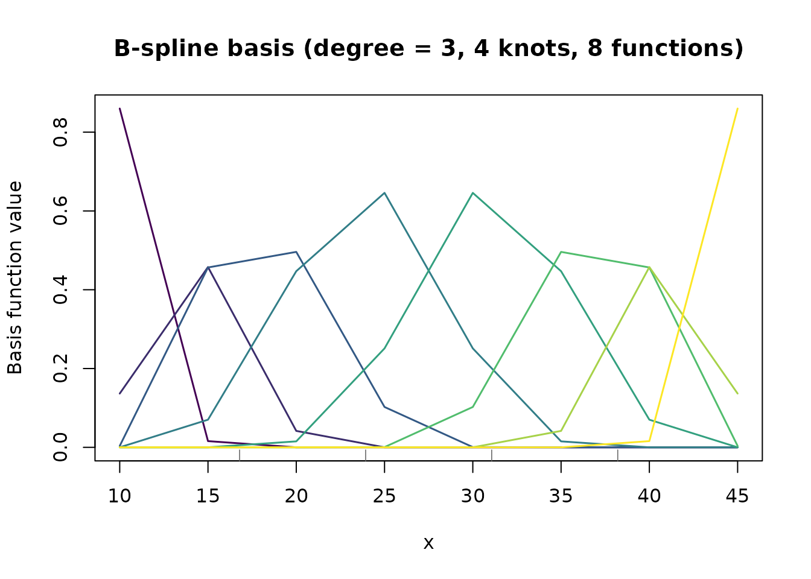

Overview
funcrop provides Functional Data Analysis (FDA) methods for crop variety trials, integrating B-spline basis functions with linear mixed models. It supports four estimation backends:
-
mgcv – GAM/BAM via
gam(),bam(),gamm(). Ships with R. Default. -
lme4 – LMM/GLMM via
lmer(),glmer(). Open-source, CRAN. - ASReml-R – REML estimation. Commercial licence. Advanced structures (FA, AR1).
- bayesreml – Bayesian MCMC via greta/TensorFlow. Full posterior inference.
The package handles:
- Scalar-on-function regression – relating yield to grain-fill curves
- Two-dimensional functional traits – time x depth, time x wavelength
- Multi-environment trials with GxE interaction on functional traits
- Genomic/pedigree integration for prediction
Quick Start: B-Spline Basis Construction
The core building block is the B-spline basis:
library(funcrop)
library(data.table)
# Simulated grain-fill time points
times <- c(10, 15, 20, 25, 30, 35, 40, 45)
# Construct B-spline basis with 4 internal knots, cubic, order-2 penalty
basis <- bspline_basis(times, n_knots = 4, degree = 3, penalty_order = 2)
basis
#> B-spline basis (fda_basis)
#> Degree: 3
#> Internal knots: 4 (equally_spaced)
#> Basis functions: 8
#> Eval. points: 8
#> Boundary: [9.65, 45.35]
#> Penalty order: 2
#> Basis matrix dim: 8 x 8The basis matrix B has 8 rows (time points) and 8
columns (basis functions). The penalty matrix P enforces
smoothness.
plot(basis)
B-spline basis functions evaluated at grain-fill time points.
Mixed Model Reparameterisation
The key insight linking P-splines to mixed models: decompose the basis into a fixed (null space) and random (range space) component.
mm <- make_Zspline(basis, constraint = "decompose")
cat("Fixed (polynomial) columns:", ncol(mm$X), "\n")
#> Fixed (polynomial) columns: 2
cat("Random (wiggly) columns: ", ncol(mm$Z), "\n")
#> Random (wiggly) columns: 6This means a penalised spline can be fitted as a standard mixed model where the smoothing parameter is estimated as a variance ratio via REML or Bayesian posterior.
Simulated Data
funcrop ships with two simulated datasets:
data(sim_grain_fill)
cat("Grain-fill trial:", nrow(sim_grain_fill), "rows\n")
#> Grain-fill trial: 480 rows
cat(" Varieties:", uniqueN(sim_grain_fill$variety), "\n")
#> Varieties: 20
cat(" Blocks:", uniqueN(sim_grain_fill$block), "\n")
#> Blocks: 3
cat(" Time points:", sort(unique(sim_grain_fill$time)), "\n")
#> Time points: 10 15 20 25 30 35 40 45
data(sim_met_fda)
cat("\nMET trial:", nrow(sim_met_fda), "rows\n")
#>
#> MET trial: 2160 rows
cat(" Varieties:", uniqueN(sim_met_fda$variety), "\n")
#> Varieties: 30
cat(" Environments:", uniqueN(sim_met_fda$environment), "\n")
#> Environments: 4Available Engines
funcrop_engines()
#> [1] "mgcv" "lme4"Genomic Relationship Matrices
funcrop includes utilities for constructing relationship matrices:
# Small example: 10 varieties, 50 markers
set.seed(123)
markers <- matrix(sample(0:2, 500, replace = TRUE), nrow = 10)
rownames(markers) <- paste0("V", 1:10)
G <- make_genomic_matrix(markers, method = "vanraden1")
cat("GRM dimensions:", nrow(G), "x", ncol(G), "\n")
#> GRM dimensions: 10 x 10
cat("Mean diagonal:", round(mean(diag(G)), 3), "\n")
#> Mean diagonal: 1Next Steps
See the Grain-Fill Case Study vignette for a
complete worked example using fit_functional_profiles() and
scalar_on_function().